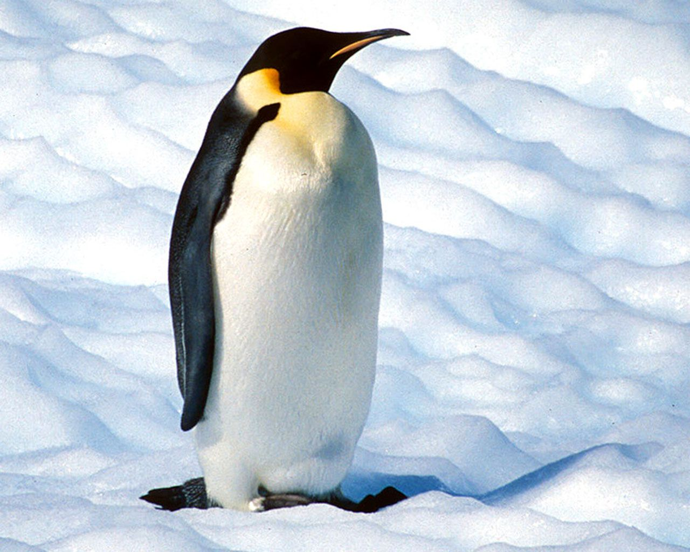

conoce algunas especies
 |
 |
 |
Leon |
Pinguino |
Delfin |
¿Donde viven?
- El leon vive principalmenter en Africa
- El pingyuino habita regiones frias
- El delfin vive en los océanos Y mares
Informacion
| Animal | Habitat | Alimentacion |
| Leon | Sabana | Carnivoro |
| Pinguino | Regiones frias | Pescado |
| Delfin | Oceano y mares | Pescado |
El Rey De la Selva
El leon es uno de lops animales mas conocidos del mundo